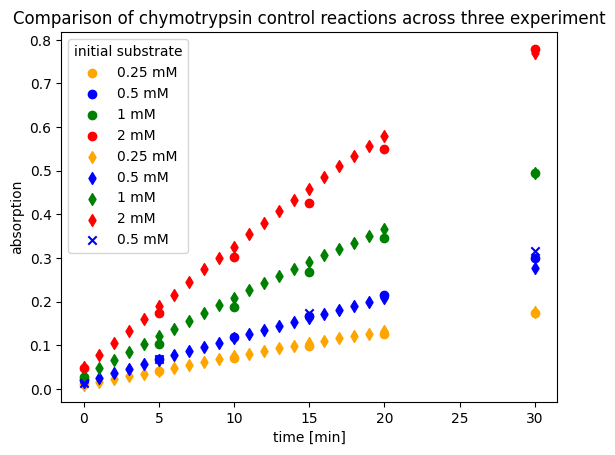

Test book
Contents
Test book#
import numpy as np
import pandas as pd
import matplotlib.pyplot as plt
import pyenzyme as pe
df = pd.read_excel("Daten von 3 Experimenten.xlsx", sheet_name="control_reactions").set_index("Unnamed: 0")
experiment_ids = df.loc["Experiment"].values
df = df.drop(index="Experiment")
df
---------------------------------------------------------------------------
FileNotFoundError Traceback (most recent call last)
Input In [2], in <cell line: 1>()
----> 1 df = pd.read_excel("Daten von 3 Experimenten.xlsx", sheet_name="control_reactions").set_index("Unnamed: 0")
2 experiment_ids = df.loc["Experiment"].values
3 df = df.drop(index="Experiment")
File ~/miniconda3/lib/python3.9/site-packages/pandas/util/_decorators.py:311, in deprecate_nonkeyword_arguments.<locals>.decorate.<locals>.wrapper(*args, **kwargs)
305 if len(args) > num_allow_args:
306 warnings.warn(
307 msg.format(arguments=arguments),
308 FutureWarning,
309 stacklevel=stacklevel,
310 )
--> 311 return func(*args, **kwargs)
File ~/miniconda3/lib/python3.9/site-packages/pandas/io/excel/_base.py:457, in read_excel(io, sheet_name, header, names, index_col, usecols, squeeze, dtype, engine, converters, true_values, false_values, skiprows, nrows, na_values, keep_default_na, na_filter, verbose, parse_dates, date_parser, thousands, decimal, comment, skipfooter, convert_float, mangle_dupe_cols, storage_options)
455 if not isinstance(io, ExcelFile):
456 should_close = True
--> 457 io = ExcelFile(io, storage_options=storage_options, engine=engine)
458 elif engine and engine != io.engine:
459 raise ValueError(
460 "Engine should not be specified when passing "
461 "an ExcelFile - ExcelFile already has the engine set"
462 )
File ~/miniconda3/lib/python3.9/site-packages/pandas/io/excel/_base.py:1376, in ExcelFile.__init__(self, path_or_buffer, engine, storage_options)
1374 ext = "xls"
1375 else:
-> 1376 ext = inspect_excel_format(
1377 content_or_path=path_or_buffer, storage_options=storage_options
1378 )
1379 if ext is None:
1380 raise ValueError(
1381 "Excel file format cannot be determined, you must specify "
1382 "an engine manually."
1383 )
File ~/miniconda3/lib/python3.9/site-packages/pandas/io/excel/_base.py:1250, in inspect_excel_format(content_or_path, storage_options)
1247 if isinstance(content_or_path, bytes):
1248 content_or_path = BytesIO(content_or_path)
-> 1250 with get_handle(
1251 content_or_path, "rb", storage_options=storage_options, is_text=False
1252 ) as handle:
1253 stream = handle.handle
1254 stream.seek(0)
File ~/miniconda3/lib/python3.9/site-packages/pandas/io/common.py:798, in get_handle(path_or_buf, mode, encoding, compression, memory_map, is_text, errors, storage_options)
789 handle = open(
790 handle,
791 ioargs.mode,
(...)
794 newline="",
795 )
796 else:
797 # Binary mode
--> 798 handle = open(handle, ioargs.mode)
799 handles.append(handle)
801 # Convert BytesIO or file objects passed with an encoding
FileNotFoundError: [Errno 2] No such file or directory: 'Daten von 3 Experimenten.xlsx'
data = df.values.T.reshape(9,2,22)
labels = [0.25, 0.5, 1, 2, 0.25, 0.5, 1, 2, 0.5]
colors = ["orange", "blue", "green", "red", "orange", "blue", "green", "red", "blue", ]
markers = ["o", "o", "o", "o", "d", "d", "d", "d", "x", ]
for d, label, color, marker in zip(data, labels, colors, markers):
mean =np.mean(d, axis=0)
std =np.std(d, axis=0)
time = df.index.values
plt.scatter(time, mean, color=color, label=f"{label} mM", marker=marker)
plt.legend(title="initial substrate")
plt.title("Comparison of chymotrypsin control reactions across three experiment")
plt.ylabel("absorption")
plt.xlabel("time [min]")
plt.show()

import pyenzymekinetics as pek
enzmldoc = pe.EnzymeMLDocument.fromTemplate("chymo_HSAwt and HSA(M3).xlsx")
#enzmldoc.visualize()
/Users/maxhaussler/miniconda3/envs/pek/lib/python3.10/site-packages/openpyxl/worksheet/_reader.py:312: UserWarning: Data Validation extension is not supported and will be removed
warn(msg)
/Users/maxhaussler/miniconda3/envs/pek/lib/python3.10/site-packages/openpyxl/worksheet/_reader.py:312: UserWarning: Data Validation extension is not supported and will be removed
warn(msg)
/Users/maxhaussler/miniconda3/envs/pek/lib/python3.10/site-packages/openpyxl/worksheet/_reader.py:312: UserWarning: Data Validation extension is not supported and will be removed
warn(msg)
/Users/maxhaussler/miniconda3/envs/pek/lib/python3.10/site-packages/openpyxl/worksheet/_reader.py:312: UserWarning: Data Validation extension is not supported and will be removed
warn(msg)
/Users/maxhaussler/miniconda3/envs/pek/lib/python3.10/site-packages/openpyxl/worksheet/_reader.py:312: UserWarning: Data Validation extension is not supported and will be removed
warn(msg)
/Users/maxhaussler/miniconda3/envs/pek/lib/python3.10/site-packages/openpyxl/worksheet/_reader.py:312: UserWarning: Data Validation extension is not supported and will be removed
warn(msg)
/Users/maxhaussler/miniconda3/envs/pek/lib/python3.10/site-packages/openpyxl/worksheet/_reader.py:312: UserWarning: Data Validation extension is not supported and will be removed
warn(msg)
product_standard = pek.StandardCurve.from_excel("../round5_control/pNA-standard.xlsx", sheet_name="csv", concentration_unit="mM", substance_name="p-NP")
#product_standard.visualize()
/Users/maxhaussler/miniconda3/envs/pek/lib/python3.10/site-packages/scipy/optimize/_minpack_py.py:833: OptimizeWarning: Covariance of the parameters could not be estimated
warnings.warn('Covariance of the parameters could not be estimated',
enzmldoc = pek.abso_to_conc(enzmldoc, product_standard, reactant_id="s1")
#kin_two_inhibitiors = pek.EnzymeKinetics.from_EnzymeML(enzmldoc, inhibitor_id="s2", inhibitor2_id="s3")
#kin_two_inhibitiors.fit_models(initial_substrates=[0.25, 0.5, 1], start_time=1)
#kin_two_inhibitiors.visualize_fit()
#enzmldoc.toFile("", name="two_inhibitors")
Seperate analysis#
chymo_HSAwt = pe.EnzymeMLDocument.fromTemplate("/Users/maxhaussler/Dropbox/master_thesis/data/marwa/final/chymo_HSAwt.xlsx")
chymo_HSAM3 = pe.EnzymeMLDocument.fromTemplate("/Users/maxhaussler/Dropbox/master_thesis/data/marwa/final/chymo_HSA(M3).xlsx")
chymo_HSAwt = pek.abso_to_conc(chymo_HSAwt, product_standard, reactant_id="s1")
chymo_HSAM3 = pek.abso_to_conc(chymo_HSAM3, product_standard, reactant_id="s1")
/Users/maxhaussler/miniconda3/envs/pek/lib/python3.10/site-packages/openpyxl/worksheet/_reader.py:312: UserWarning: Data Validation extension is not supported and will be removed
warn(msg)
/Users/maxhaussler/miniconda3/envs/pek/lib/python3.10/site-packages/openpyxl/worksheet/_reader.py:312: UserWarning: Data Validation extension is not supported and will be removed
warn(msg)
/Users/maxhaussler/miniconda3/envs/pek/lib/python3.10/site-packages/openpyxl/worksheet/_reader.py:312: UserWarning: Data Validation extension is not supported and will be removed
warn(msg)
/Users/maxhaussler/miniconda3/envs/pek/lib/python3.10/site-packages/openpyxl/worksheet/_reader.py:312: UserWarning: Data Validation extension is not supported and will be removed
warn(msg)
/Users/maxhaussler/miniconda3/envs/pek/lib/python3.10/site-packages/openpyxl/worksheet/_reader.py:312: UserWarning: Data Validation extension is not supported and will be removed
warn(msg)
/Users/maxhaussler/miniconda3/envs/pek/lib/python3.10/site-packages/openpyxl/worksheet/_reader.py:312: UserWarning: Data Validation extension is not supported and will be removed
warn(msg)
/Users/maxhaussler/miniconda3/envs/pek/lib/python3.10/site-packages/openpyxl/worksheet/_reader.py:312: UserWarning: Data Validation extension is not supported and will be removed
warn(msg)
/Users/maxhaussler/miniconda3/envs/pek/lib/python3.10/site-packages/openpyxl/worksheet/_reader.py:312: UserWarning: Data Validation extension is not supported and will be removed
warn(msg)
/Users/maxhaussler/miniconda3/envs/pek/lib/python3.10/site-packages/openpyxl/worksheet/_reader.py:312: UserWarning: Data Validation extension is not supported and will be removed
warn(msg)
/Users/maxhaussler/miniconda3/envs/pek/lib/python3.10/site-packages/openpyxl/worksheet/_reader.py:312: UserWarning: Data Validation extension is not supported and will be removed
warn(msg)
/Users/maxhaussler/miniconda3/envs/pek/lib/python3.10/site-packages/openpyxl/worksheet/_reader.py:312: UserWarning: Data Validation extension is not supported and will be removed
warn(msg)
/Users/maxhaussler/miniconda3/envs/pek/lib/python3.10/site-packages/openpyxl/worksheet/_reader.py:312: UserWarning: Data Validation extension is not supported and will be removed
warn(msg)
/Users/maxhaussler/miniconda3/envs/pek/lib/python3.10/site-packages/openpyxl/worksheet/_reader.py:312: UserWarning: Data Validation extension is not supported and will be removed
warn(msg)
/Users/maxhaussler/miniconda3/envs/pek/lib/python3.10/site-packages/openpyxl/worksheet/_reader.py:312: UserWarning: Data Validation extension is not supported and will be removed
warn(msg)
kin_HSAwt = pek.EnzymeKinetics.from_EnzymeML(chymo_HSAwt, inhibitor_id="s2")
kin_HSAwt.fit_models(initial_substrates=[0.25, 0.5, 1], start_time=1)
kin_HSAwt.visualize_fit("competitive inhibition")
parameter added
irreversible Michaelis Menten
irreversible Michaelis Menten with enzyme inactivation
substrate inhibition
substrate inhibition with enzyme inactivation
Substrate dependent enzyme inactivation
product inhibition
product inhibition with enzyme inactivation
competitive inhibition
competitive inhibition with enzyme inactivation
uncompetitive inhibition
uncompetitive inhibition with enzyme inactivation
non-competitive inhibition
partially competitive inhibition
| AIC | kcat [1/min] | Km [mmole / l] | ki time-dep enz-inactiv. [1/min] | Ki uncompetitive [mmole / l] | Ki competitive [mmole / l] | |
|---|---|---|---|---|---|---|
| competitive inhibition with enzyme inactivation | -780 | 45.74 +/- 2.35% | 1.66 +/- 0.12% | 0.01 +/- 36.36% | - | 0.16 +/- 13.47% |
| competitive inhibition | -774 | 43.03 +/- 0.99% | 1.66 +/- 0.48% | - | - | 0.16 +/- 13.64% |
| uncompetitive inhibition with enzyme inactivation | -742 | 44.65 +/- 3.65% | 1.66 +/- 2.49% | 0.01 +/- 48.73% | 0.14 +/- 31.24% | - |
| uncompetitive inhibition | -739 | 41.96 +/- 1.52% | 1.66 +/- 0.03% | - | 0.14 +/- 35.51% | - |
| non-competitive inhibition | -737 | 41.96 +/- 1.42% | 1.66 +/- 0.44% | - | 0.14 +/- 35.00% | 520.95 +/- 2043.41% |
| irreversible Michaelis Menten with enzyme inactivation | -734 | 43.40 +/- 3.39% | 1.66 +/- 0.94% | 0.01 +/- 54.25% | - | - |
| irreversible Michaelis Menten | -732 | 40.80 +/- 1.31% | 1.66 +/- 0.01% | - | - | - |
| product inhibition with enzyme inactivation | -732 | 43.40 +/- 3.64% | 1.66 +/- 0.90% | 0.01 +/- 54.15% | - | 892.37 +/- 6090.77% |
| Substrate dependent enzyme inactivation | -731 | 39.69 +/- 2.92% | 1.66 +/- 1.29% | 0.00 +/- 82.11% | - | - |
| product inhibition | -730 | 40.96 +/- 5.21% | 1.66 +/- 3.03% | - | - | 7.41 +/- 1017.80% |
| substrate inhibition | -729 | 40.92 +/- 4.54% | 1.66 +/- 4.86% | - | 85.65 +/- 589.43% | - |
| substrate inhibition with enzyme inactivation | -729 | 43.74 +/- nan% | 1.66 +/- nan% | 0.01 +/- nan% | 34.12 +/- nan% | - |
| partially competitive inhibition | -728 | 40.80 +/- 4.40% | 1.66 +/- 4.68% | - | 941.01 +/- 261.96% | 218.97 +/- 1433.74% |
[[Fit Statistics]]
# fitting method = leastsq
# function evals = 75
# data points = 60
# variables = 3
chi-square = 1.3532e-04
reduced chi-square = 2.3740e-06
Akaike info crit = -774.132480
Bayesian info crit = -767.849446
[[Variables]]
k_cat: 43.0308866 +/- 0.42775914 (0.99%) (init = 16.6448)
Km: 1.66276833 +/- 0.00797671 (0.48%) (init = 0.00166448)
K_ic: 0.16007249 +/- 0.02183799 (13.64%) (init = 0.1)
[[Correlations]] (unreported correlations are < 0.100)
C(k_cat, K_ic) = -0.572
C(k_cat, Km) = 0.329
C(Km, K_ic) = 0.159
kin_HSAM3 = pek.EnzymeKinetics.from_EnzymeML(chymo_HSAM3, inhibitor_id="s3")
kin_HSAM3.fit_models(initial_substrates=[0.25, 0.5, 1], start_time=1)
kin_HSAM3.visualize_fit("competitive inhibition")
parameter added
irreversible Michaelis Menten
irreversible Michaelis Menten with enzyme inactivation
substrate inhibition
substrate inhibition with enzyme inactivation
Substrate dependent enzyme inactivation
product inhibition
product inhibition with enzyme inactivation
competitive inhibition
competitive inhibition with enzyme inactivation
uncompetitive inhibition
uncompetitive inhibition with enzyme inactivation
non-competitive inhibition
partially competitive inhibition
| AIC | kcat [1/min] | Km [mmole / l] | ki time-dep enz-inactiv. [1/min] | Ki uncompetitive [mmole / l] | Ki competitive [mmole / l] | |
|---|---|---|---|---|---|---|
| competitive inhibition with enzyme inactivation | -767 | 45.31 +/- 2.85% | 1.66 +/- 0.05% | 0.01 +/- 50.55% | - | 0.04 +/- 5.42% |
| competitive inhibition | -765 | 42.94 +/- 1.61% | 1.66 +/- 0.57% | - | - | 0.04 +/- 6.03% |
| non-competitive inhibition | -762 | 42.94 +/- 2.14% | 1.66 +/- 2.15% | - | 1.32 +/- 998.64% | 0.04 +/- 14.60% |
| uncompetitive inhibition | -679 | 41.72 +/- 2.59% | 1.66 +/- 2.27% | - | 0.02 +/- 12.90% | - |
| uncompetitive inhibition with enzyme inactivation | -678 | 44.11 +/- 6.14% | 1.66 +/- 0.05% | 0.01 +/- 102.99% | 0.02 +/- 13.83% | - |
| irreversible Michaelis Menten | -627 | 35.89 +/- 2.72% | 1.66 +/- 1.52% | - | - | - |
| Substrate dependent enzyme inactivation | -626 | 33.81 +/- 7.12% | 1.66 +/- 4.87% | 0.01 +/- 106.74% | - | - |
| irreversible Michaelis Menten with enzyme inactivation | -625 | 37.86 +/- 10.64% | 1.66 +/- 20.59% | 0.01 +/- 174.17% | - | - |
| product inhibition | -625 | 35.82 +/- 19.00% | 1.66 +/- 25.90% | - | - | 931.23 +/- 100.83% |
| substrate inhibition with enzyme inactivation | -623 | 37.98 +/- nan% | 1.66 +/- nan% | 0.01 +/- nan% | 83.11 +/- nan% | - |
| product inhibition with enzyme inactivation | -623 | 37.86 +/- 29.05% | 1.66 +/- 22.63% | 0.01 +/- 242.50% | - | 606.99 +/- 331972.98% |
| partially competitive inhibition | -623 | 35.89 +/- 4.21% | 1.66 +/- 4.75% | - | 792.68 +/- 7000.36% | 999.84 +/- 81.22% |
| substrate inhibition | -616 | 39.22 +/- 7.42% | 1.66 +/- 0.40% | - | 2.75 +/- 76.59% | - |
[[Fit Statistics]]
# fitting method = leastsq
# function evals = 102
# data points = 60
# variables = 3
chi-square = 1.5684e-04
reduced chi-square = 2.7516e-06
Akaike info crit = -765.276639
Bayesian info crit = -758.993606
[[Variables]]
k_cat: 42.9419697 +/- 0.69286722 (1.61%) (init = 16.6448)
Km: 1.66447591 +/- 0.00953710 (0.57%) (init = 0.00166448)
K_ic: 0.03847993 +/- 0.00231989 (6.03%) (init = 0.1)
[[Correlations]] (unreported correlations are < 0.100)
C(k_cat, Km) = 0.777
C(k_cat, K_ic) = -0.637
C(Km, K_ic) = -0.398
kin_HSAM3.visualize_fit()
[[Fit Statistics]]
# fitting method = leastsq
# function evals = 67
# data points = 60
# variables = 4
chi-square = 1.4640e-04
reduced chi-square = 2.6142e-06
Akaike info crit = -767.412000
Bayesian info crit = -759.034622
[[Variables]]
k_cat: 45.3082357 +/- 1.29153360 (2.85%) (init = 16.6448)
Km: 1.66448000 +/- 7.5657e-04 (0.05%) (init = 0.00166448)
K_ie: 0.00530893 +/- 0.00268371 (50.55%) (init = 0.01)
K_ic: 0.03848833 +/- 0.00208631 (5.42%) (init = 0.1)
[[Correlations]] (unreported correlations are < 0.100)
C(k_cat, K_ie) = 0.936
C(k_cat, K_ic) = -0.201
C(Km, K_ic) = -0.104